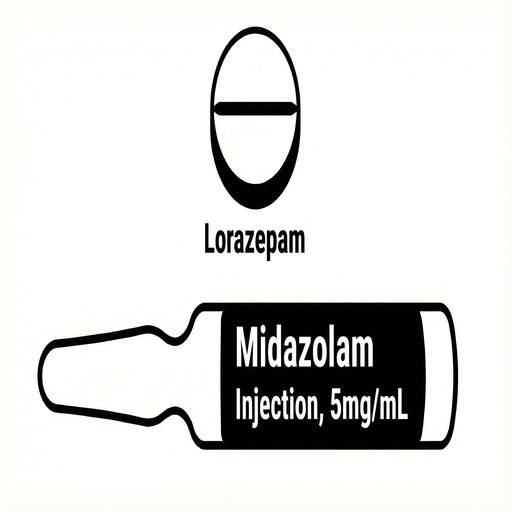
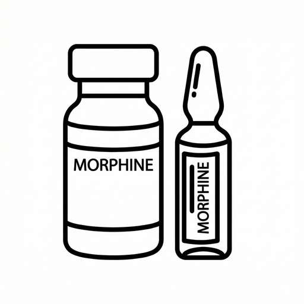

🩸 Pengurusan Pendarahan
Protokol Pengurusan Pendarahan Paliatif
Memahami Pendarahan
Pendarahan boleh berlaku dari mulut, hidung, luka kulit, tapak tumor, paru-paru, perut atau usus dalam penyakit lanjutan.
Ia mungkin kecil dan perlahan, atau tiba-tiba dan banyak. Pengurusan bertujuan mengurangkan kesusahan, mengekalkan keselesaan, dan menghormati keutamaan pesakit.
Tindakan Segera
Kekal bersama pesakit. Tenangkan mereka menggunakan suara dan sentuhan yang tenang. Keutamaan adalah untuk sekadar berada di sana.
Gunakan tuala berwarna gelap untuk menyembunyikan darah dan mengurangkan kegelisahan semua yang ada.

Protokol Ubat
Berikan Midazolam atau Lorazepam bukal untuk menenangkan pesakit.
Jika pesakit rasa sesak nafas, berikan dos morfin/opioid seperti yang dipreskripsi.
Hubungi pasukan penjagaan paliatif yang bertugas.
Pengurusan Pendarahan Paliatif
Panduan Penjagaan Pesakit
Prinsip Umum
Pendarahan boleh berlaku dari mulut, hidung, luka kulit, tumor, atau paru-paru. Ia mungkin kecil atau tiba-tiba. Pengurusan bertujuan mengurangkan kesusahan dan mengekalkan keselesaan.
Keutamaan adalah untuk kekal bersama pesakit. Tenangkan mereka dengan suara dan sentuhan yang lembut.
Gunakan tuala berwarna gelap untuk menyembunyikan darah. Ini dapat mengurangkan kegelisahan dengan ketara.
Protokol Ubat
Berikan Midazolam atau Lorazepam bukal untuk menenangkan pesakit.
Jika pesakit sesak nafas, berikan dos morfin/opioid seperti yang dipreskripsi.
Hubungi pasukan penjagaan paliatif yang bertugas.